Pacific Coast Highway / Big Sur Travel Guide
Rugged and mountainous section of the Central Coast of California between Carmel Highlands and San Simeon, where the Santa Lucia Mountains rise abruptly from the Pacific Ocean and is frequently praised for its dramatic scenery
Places to See in Pacific Coast Highway / Big Sur
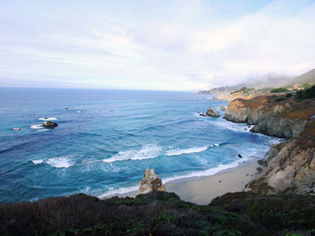
Pacific Southwest Region USFWS from Sacramento, US, Public domain, via Wikimedia Commons; Image Size Adjusted
.jpg){kind=link}
Andrew Molera State Park
Relatively undeveloped state park on the Big Sur coast situated at the mouth of the Big Sur River. Activities at the park include hiking, fishing and beachcombing, with miles of trails winding through meadows, beaches and hilltops
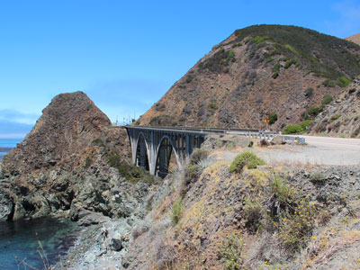
Thomson M, CC BY 3.0, via Wikimedia Commons; Image Size Adjusted
.jpg){kind=link}
Big Creek Bridge
589-foot (180 m)-long, open spandrel, concrete deck arch bridge located on the southern portion of the Big Sur coast of California, crossing Big Creek Canyon on this scenic, mountainous coast

Diliff, CC BY-SA 3.0, via Wikimedia Commons; Image Size Adjusted

Bixby Creek Bridge
One of the most photographed bridges in California due to its aesthetic design, "graceful architecture and magnificent setting"
Elephant Seal Vista Point
Scenic coastal boardwalk offering year-round wildlife viewing of massive marine mammals in their natural habitat.
Kevin Stanchfield, CC BY 2.0, via Wikimedia Commons; Image Size Adjusted

Estero Bluffs State Park
Pebble-strewn shoreline bordered by a wooden boardwalk and coastal bluffs, popular for tidepooling, sunsets, and wildlife viewing.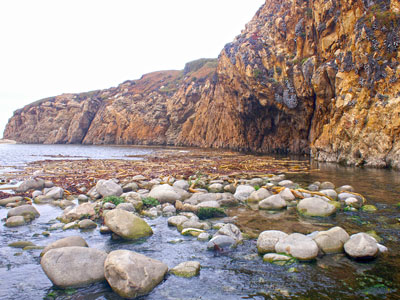
Daniel Di Palma, CC BY-SA 4.0, via Wikimedia Commons; Image Size Adjusted

Garrapata State Park
2 miles (3.2 km) of beachfront, with coastal hiking and a 50-foot (15 m) climb to a view of the Pacific
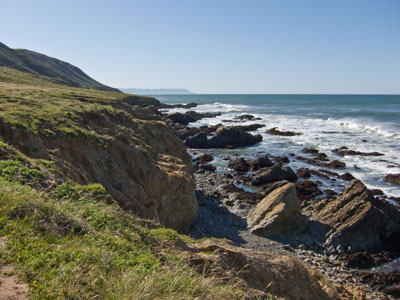
Frank Schulenburg, CC BY-SA 3.0, via Wikimedia Commons; Image Size Adjusted

Harmony Headlands State Park
State park preserves an undeveloped parcel of Pacific coast on Highway 1, is the only public access to the coast between the towns of Cayucos and Harmony
Hearst Castle
Historic estate conceived by publishing tycoon William Randolph Hearst, built between 1919-47, and today is a museum and California State Park
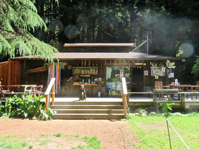
Fabrice Florin from Mill Valley, USA, CC BY-SA 2.0, via Wikimedia Commons; Image Size Adjusted
.jpg){kind=link}
Henry Miller Memorial Library
Nonprofit arts center, bookstore, and performance venue in Big Sur, California, documenting the life of the late writer, artist, and Henry Miller

Julia Pfeiffer Burns State Park / McWay Falls
Home to 300-foot (90 m) redwoods which are over 2,500 years old. A main feature of the park is McWay Falls, which drops over a cliff of 80 feet (24 m) into the Pacific Ocean
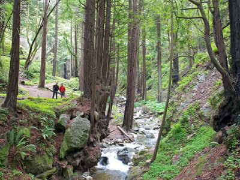
Kevin Stanchfield, CC BY 2.0, via Wikimedia Commons; Image Size Adjusted
Limekiln State Park
Contains four lime kilns from an 1887-1890 lime-calcining operation, plus a beach, redwood forest, and 100-foot (30 m) Limekiln Falls
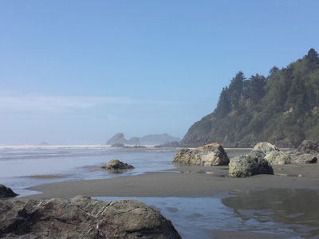
Kevin Stanchfield, CC BY 2.0, via Wikimedia Commons; Image Size Adjusted
Moonstone Beach
Pebble-strewn shoreline bordered by a wooden boardwalk and coastal bluffs, popular for tidepooling, sunsets, and wildlife viewing.
Pfeiffer Beach
One of the most popular beaches on the Central Coast and is well known for Keyhole Rock, a popular photography subject
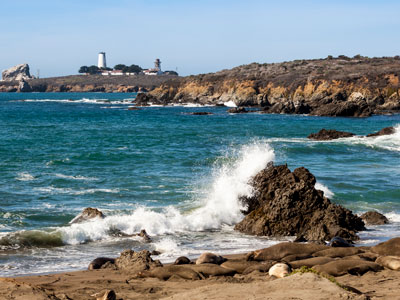
Frank Schulenburg, CC BY-SA 3.0, via Wikimedia Commons; Image Size Adjusted
Piedras Blancas Light Station
Historic lighthouse on 19-acre site offers by guided tours, and largest elephant seal rookery on the West Coast

Diliff, CC BY-SA 3.0, via Wikimedia Commons; Image Size Adjusted

Point Lobos State Natural Reserve
Geologically unique and contains a rich and diverse plant and animal life both on shore and in the water
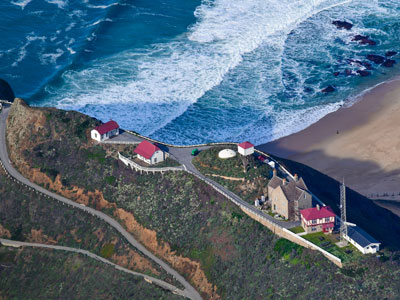
Letty.V.AllSmiles, CC BY-SA 4.0, via Wikimedia Commonss; Image Size Adjusted

Point Sur Lighthouse
Pebble-strewn shoreline bordered by a wooden boardwalk and coastal bluffs, popular for tidepooling, sunsets, and wildlife viewing.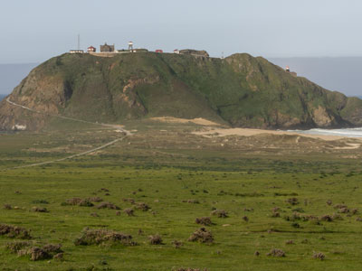
Frank Schulenburg, CC BY-SA 3.0, via Wikimedia Commons; Image Size Adjusted
Point Sur State Historic Park
Only complete, turn-of-the century lightstation open to the public in California, and is on the National Register of Historic Places
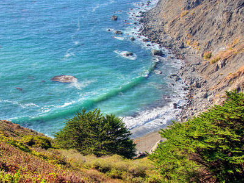
Frank Schulenburg, CC BY-SA 3.0, via Wikimedia Commons; Image Size Adjusted
Ragged Point
Headland on California's Central Coast at the southern end of Big Sur, featuring seaside cliffs, beaches, and hiking trails
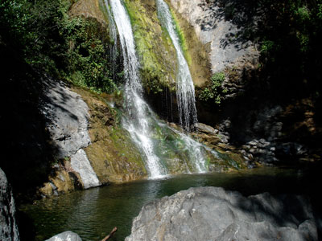
Frank Schulenburg, CC BY-SA 3.0, via Wikimedia Commons; Image Size Adjusted
Salmon Creek Falls
120-foot (36 meter) waterfall in the southern Big Sur region California
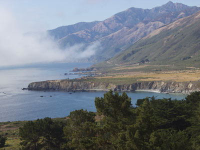
Frank Schulenburg, CC BY-SA 3.0, via Wikimedia Commons; Image Size Adjusted
Sand Dollar Beach
.5 miles long beach in Big Sur, California, one of the longest publicly accessible beaches on that coast
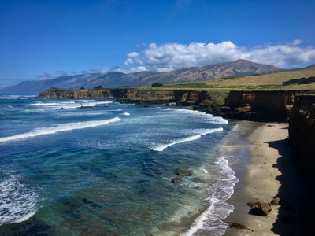
Frank Schulenburg, CC BY-SA 3.0, via Wikimedia Commons; Image Size Adjusted
William Randolph Hearst Memorial State Beach
State beach located directly below historic Hearst Castle
Peter D. Tillman from USA, CC BY-SA 2.0, via Wikimedia Commons; Image Size Adjusted
.jpg){kind=link}
William Randolph Hearst Memorial State Beach
Pebble-strewn shoreline bordered by a wooden boardwalk and coastal bluffs, popular for tidepooling, sunsets, and wildlife viewing.How to Get There
From San Simeon (65 mi): Head east on Slo San Simeon Rd toward CA-1 N. Turn left onto CA-1 N.
From San Francisco (146 mi): Get on US-101 S. Follow US-101 S to CA-156 W in Prunedale. Take exit 336 from US-101 S. Drive to CA-1 S in Big Sur.
Overview
Big Sur is a rugged, mountainous stretch of California’s Central Coast where the Santa Lucia Mountains plunge into the Pacific, often called the longest and most scenic undeveloped coastline in the contiguous United States. The 71-mile section of Highway 1 between Carmel Highlands and San Simeon winds along towering cliffs, past redwood canyons, waterfalls, and secluded beaches, and it is one of the world’s great scenic drives.
Visitors come for the views from Bixby Creek Bridge, hikes among redwoods and coastal bluffs, camping, and whale and condor watching. There is no defined boundary and few services, so the region feels remote, quiet, and far from city life.
Geography
The Santa Lucia Range rises so steeply from the ocean that Cone Peak climbs to 5,155 feet within about three miles of the shore. Narrow canyons hold redwood groves and streams that spill to the ocean in waterfalls such as McWay Falls. Fog is common along the coast in summer, while the ridgetops above are often sunny, and winter storms can trigger landslides that close the highway.
History
The Esselen and Salinan peoples lived in the Santa Lucia Mountains for thousands of years before Spanish explorers named the area el país grande del sur, “the big country of the south.” Homesteaders arrived in the 1800s, with ranching, logging, and lime-burning, and English-speaking settlers formally adopted “Big Sur” for the post office in 1915. Highway 1 was built between 1919 and 1937, with much of the work done by convict labor, and it opened the coast to visitors. Writers and artists, including Henry Miller, Jack Kerouac, and Robinson Jeffers, helped make Big Sur famous.
Cities and Towns
The small roadside village of Big Sur has a handful of inns, restaurants, and shops, and there is little else along the route. The nearby town of Carmel-by-the-Sea marks the northern gateway, with galleries, restaurants, and a beautiful beach. On the southern end, Cambria and San Simeon offer lodging and access to Hearst Castle and the Piedras Blancas elephant seal rookery.
National Protected Areas
Big Sur has no national park of its own. Offshore, the Monterey Bay National Marine Sanctuary protects the waters along the coast, and the California Coastal National Monument protects the many rocks and small islands just off the shore. Pinnacles National Park is about two hours inland.
State Parks and Historic Sites
Pfeiffer Big Sur State Park has redwood forests, campgrounds, and the river valley, and Julia Pfeiffer Burns State Park is home to McWay Falls, which drops into the ocean. Andrew Molera State Park and Garrapata State Park offer beaches and coastal trails, and Limekiln State Park has redwoods and historic kilns. Point Sur State Historic Park preserves an 1889 lighthouse, and Hearst Castle in San Simeon is a state historic park.
Seasons and Best Time to Visit
Spring is a favorite season, with wildflowers, green hills, and flowing waterfalls. Summer is the busiest season, with the best chance of clear weather above the fog but heavy traffic and crowded lots on weekends. Fall is often warm, clear, and less crowded, and it is a popular time for photographers. Winter brings storms, large waves, and landslides that can close sections of Highway 1, but also gray whale migration from December through April and elephant seal births from December through March.
This article uses material from the Wikipedia article "Big Sur", which is released under the Creative Commons Attribution-Share-Alike License 3.0. Additional information is from the Monterey Bay National Marine Sanctuary and California State Parks.
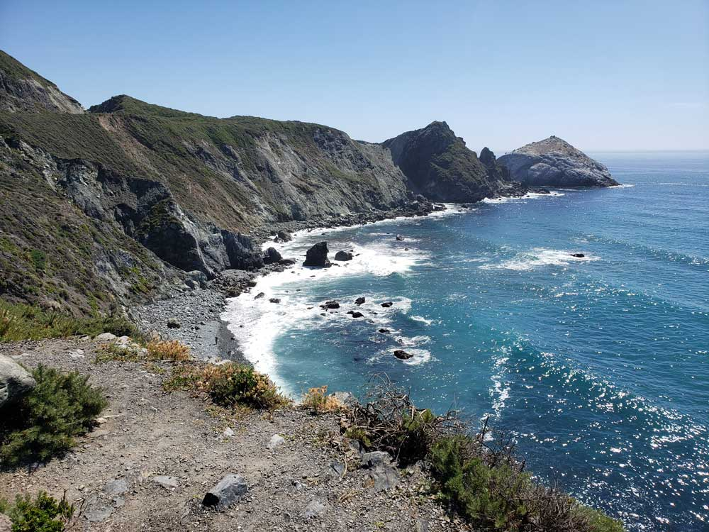
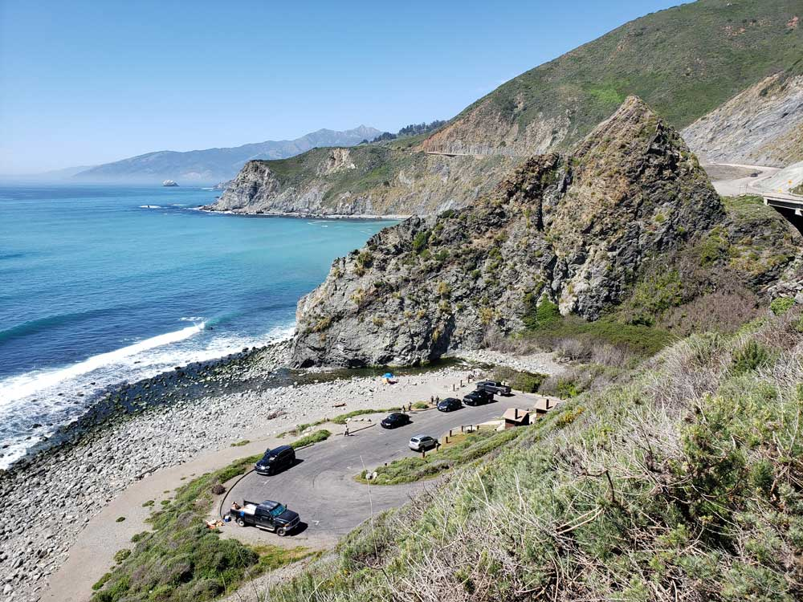
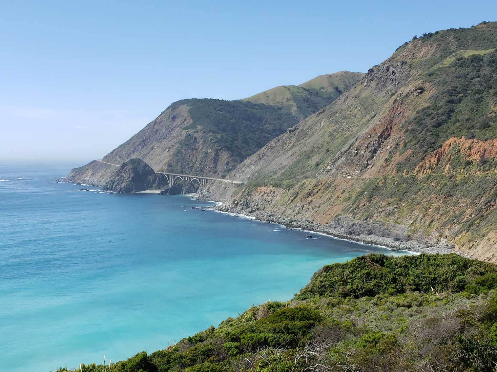
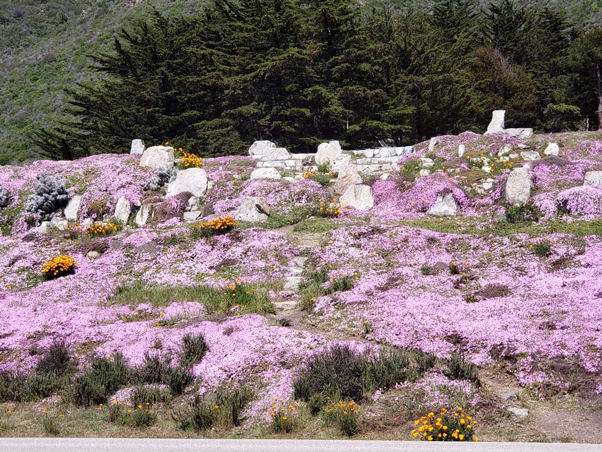
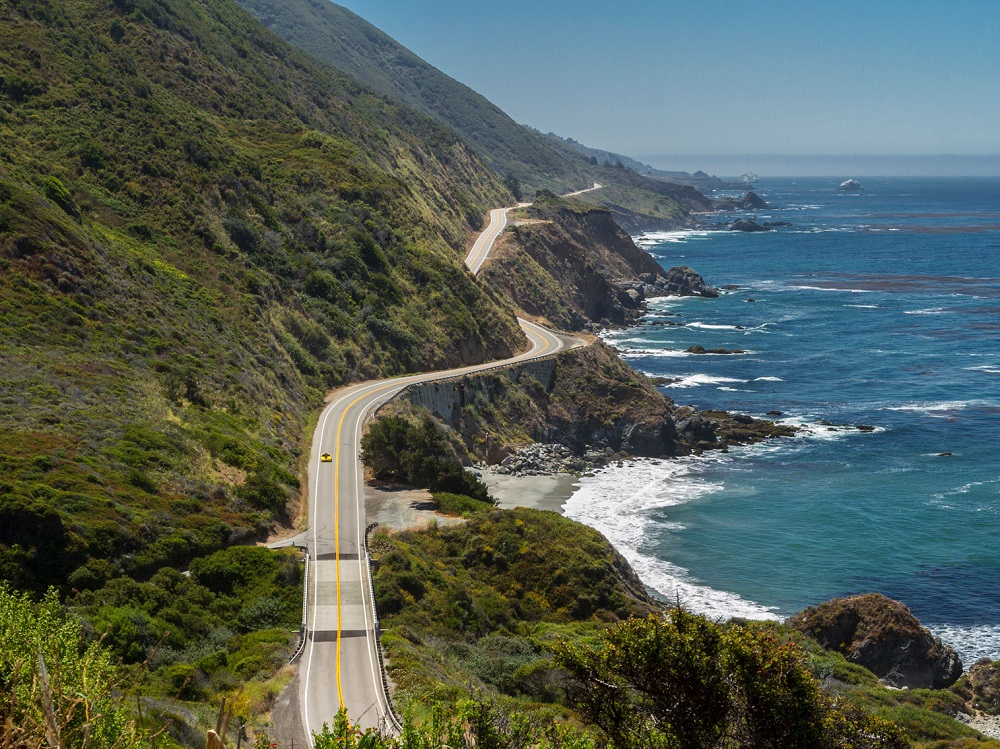